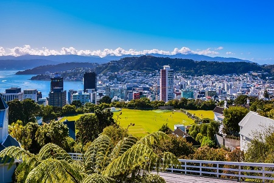
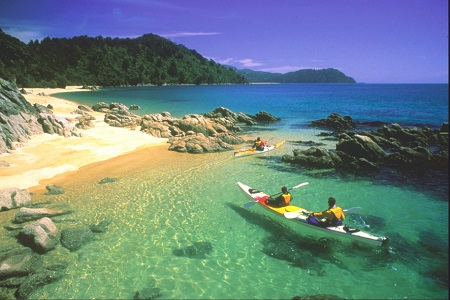
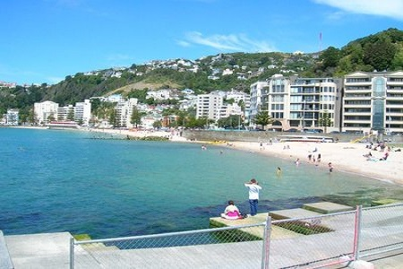
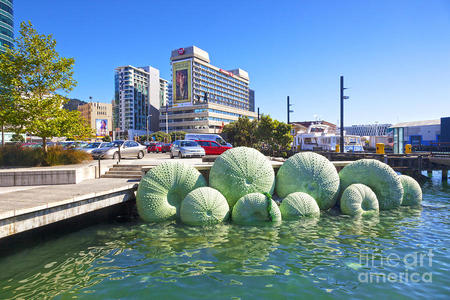
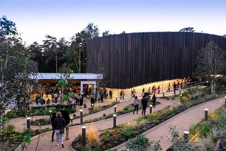
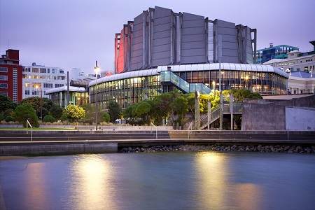
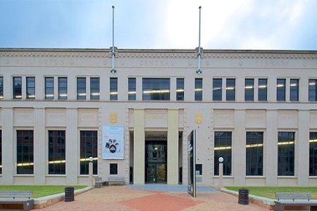

Wellington







Ubicada en el extremo sur de la Isla Norte, acurrucada entre un radiante
puerto y verdes colinas ondulantes, se encuentra Wellington, la ciudad
capital de Nueva Zelanda.
Relajate en Oriental Bay, la playa de arena dorada de la ciudad, y explorá
los distintos museos, galerías de arte y espectáculos teatrales que componen
la vibrante escena cultural de Wellington.
Si te gusta el aire libre, Wellington ofrece actividades de aventura con
mucha acción, como el ciclismo de montaña y la navegación en kayak en el
mar, así como también hermosas caminatas alrededor del puerto y las
colinas aledañas. Conocé las espectaculares vistas del sendero Makara Peak
y realizá la caminata City to Sea para apreciar lo mejor de la zona
costera de Wellington. Podés subir la colina en tranvía hasta Kelburn para obtener impresionantes
vistas de la ciudad.
Wellington es un excelente lugar para comenzar tu travesía de degustación
de vinos: no te podés perder la ruta Classic New Zealand Wine Trail, una
aventura que te llevará por algunas de las regiones vitivinícolas más
importantes del país. Marlborough, Wairarapa y Hawke's Bay están a solo
unas horas en automóvil o ferry de Wellington y prometen experiencias en
bodegas que nunca olvidarás.